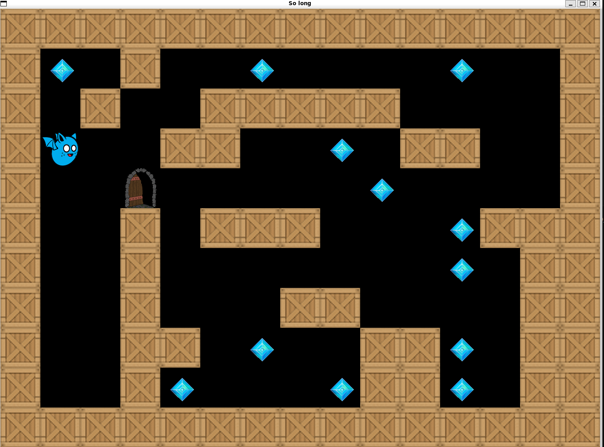

Features

Map Validation
See more
Ensures the player’s environment is correctly structured with valid paths, exit points, and boundaries. Every map is checked for accuracy before the game begins.
Player Movement
See more
Navigate through the maze using intuitive keyboard controls. Collect items and avoid dead ends as you make your way to the exit.

Collectibles and Exit
See more
The objective of the game is to collect all items and find the exit. With each collectible, the path forward becomes clearer.